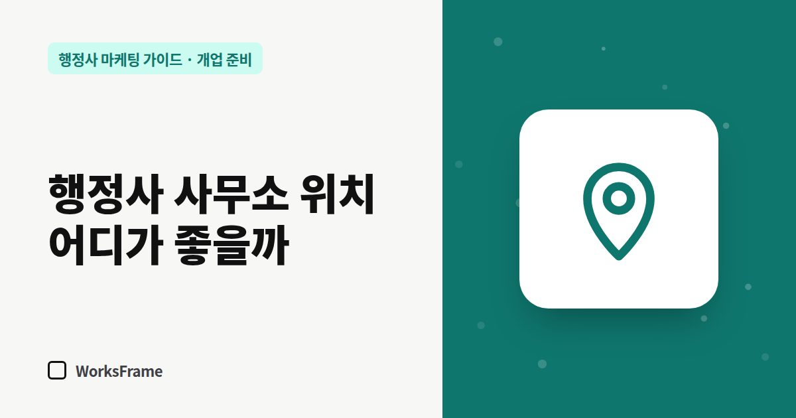

개업 준비
행정사 사무소 위치, 어디에 열어야 할까 — 주력 업무별 입지 기준
한 줄 답
고객이 직접 찾아오는 업무라면 관공서·대중교통·주차가 편한 곳, 비대면이 많은 업무라면 비용과 업무 환경을 먼저 보세요. 주소는 모든 등록에 들어가니 2년 이상 쓸 곳으로 고르세요.

행정사 사무소 위치는 “사람이 많이 지나다니는 곳”보다 내 고객이 가는 길 위가 중요합니다. 주력 업무에 따라 고객이 누구인지, 어디를 오가는지가 다르기 때문입니다.
먼저 정할 것: 고객이 사무소에 오는가?
- 방문 상담이 많은 업무 — 외국인 체류·비자, 민원, 자동차 등록처럼 서류를 들고 오는 고객이 많다면 찾아오기 쉬운 위치가 중요합니다.
- 비대면이 많은 업무 — 기업 인허가, 전국 대상 업무는 전화·메일·방문 출장이 많아 위치보다 비용과 업무 환경이 중요합니다.
주력 업무별 입지 기준
| 주력 업무 | 고객 | 고려할 위치 |
|---|---|---|
| 출입국·체류 | 외국인, 고용 사업주 | 출입국·외국인 관서, 외국인 밀집 지역, 대중교통 |
| 공장·인허가 | 제조·건설 사업자 | 산업단지 인근, 시·군청 접근성, 주차 |
| 자동차·민원 | 지역 주민 | 생활권 중심, 주차, 1층 또는 눈에 띄는 간판 |
| 토지·개발 | 토지주, 개발 사업자 | 해당 지역 관공서 접근성, 현장 이동 |
| 전국 대상 | 온라인 유입 고객 | 비용이 낮은 곳, 공유오피스도 검토 |
검색 관점에서 본 위치
네이버·구글 지도 검색은 사용자의 위치와 검색어의 지역명을 함께 봅니다. “○○동 행정사”처럼 지역명으로 찾는 고객이 많다면, 그 지역 안에 사무소 주소가 있는 편이 유리합니다. 다만 위치만으로 순위가 정해지지는 않고, 플레이스 정보가 얼마나 충실한지와 리뷰, 홈페이지 같은 다른 요소도 함께 작용합니다.
공유오피스는 괜찮을까?
비용을 줄이기 좋지만 확인할 것이 있습니다.
- 업무신고와 사업자등록에 쓸 수 있는 독립된 호실 주소인지
- 상담실을 예약해 쓸 수 있는지 (고객 개인정보가 오가는 상담)
- 네이버 플레이스 등록 시 같은 주소에 다른 업체가 많아 헷갈리지 않는지 — 사무소명과 호수를 정확히 적으세요.
계약 전 체크리스트
- 고객이 대중교통으로 올 수 있는가, 주차는 되는가
- 간판·층 안내를 달 수 있는가
- 상담 중 대화가 새지 않는가
- 주소 표기(건물명·호수)가 명확한가
- 2년 뒤에도 이 주소를 쓸 수 있는가 — 주소를 바꾸면 모든 온라인 등록을 고쳐야 합니다
자주 묻는 질문
집 주소로 업무신고를 해도 되나요?
요건은 관할 기관에 확인해야 합니다. 다만 집 주소를 쓰면 플레이스·홈페이지에 주소가 공개되는 점을 먼저 고려하세요.
이사하면 무엇을 바꿔야 하나요?
업무신고 사항 변경, 사업자등록, 네이버 플레이스, 구글 비즈니스 프로필, 홈페이지, 명함, 카카오톡 채널까지 전부입니다. 목록을 만들어 한 번에 바꾸세요.